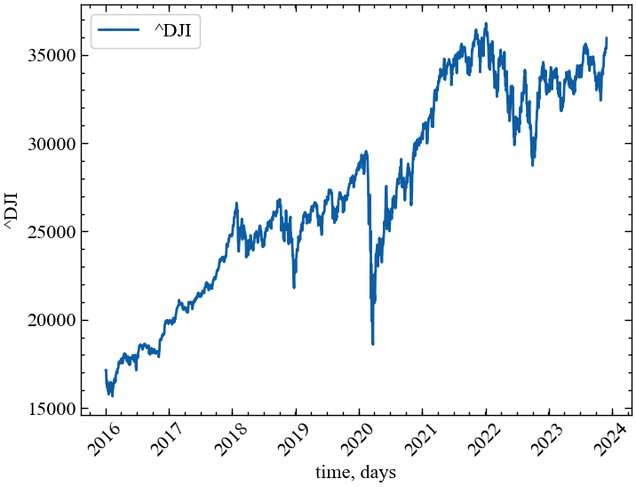
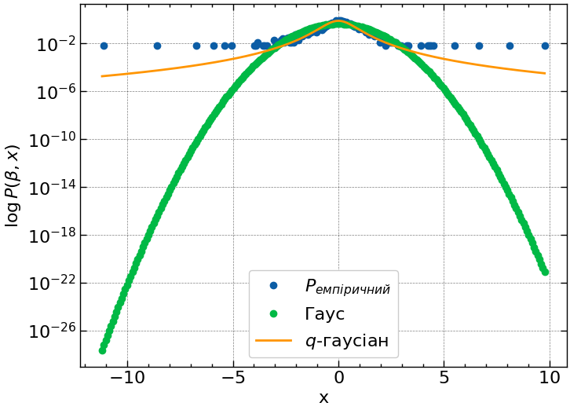
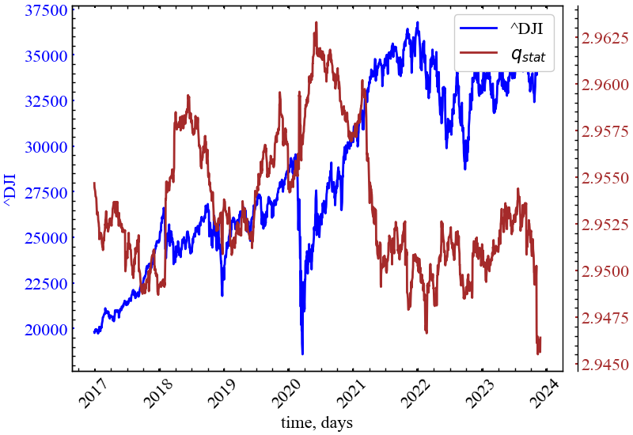
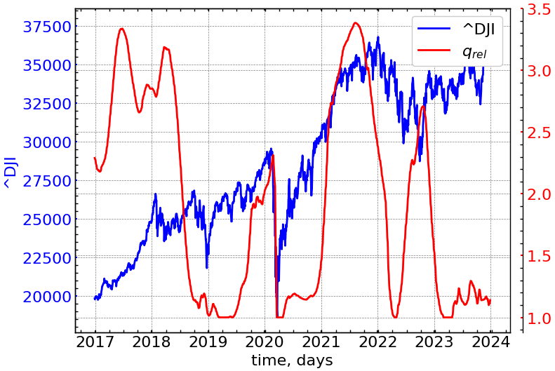
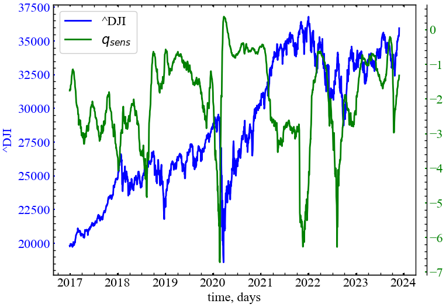
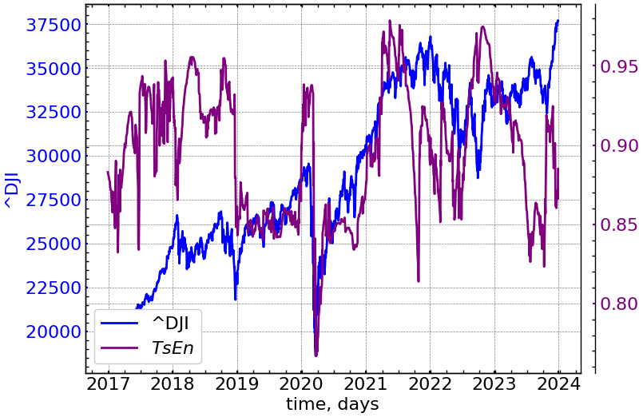

import matplotlib.pyplot as plt
import numpy as np
import yfinance as yf
import pandas as pd
import scienceplots
import neurokit2 as nk
import fathon
import scipy
import statsmodels.api as sm
from fathon import fathonUtils as fu
from scipy.stats import norm
from scipy.special import gamma
from scipy.optimize import curve_fit
from tqdm import tqdm
%matplotlib inline10 Лабораторна робота № 10
Тема. Дослідження складних систем із використанням інструментарію неекстенсивної статистики
Мета. Оволодіти методологією та інструментарієм неекстенсивної статистики стосовно критичних і кризових явищ
10.1 Теоретичні відомості
10.1.1 Неекстенсивна термодинаміка і кризи фінансово-економічних систем
Великий виклик теорії складності, що лежить в основі сучасної наукової парадигми, бере початок ще із старих та таких важливих проблем, як: стріла часу, існування простого та фундаментального фізичного рівня для єдиного опису макроскопічного та мікроскопічного рівнів, взаємозв’язок між спостерігачем та досліджуваним об’єктом, і т. д. Загалом, що стосується теорії складності та кожного нового рівня реальності, потрібні нові концепції та нові класифікації.
Зокрема, теорія складності включає: хаотичну динаміку в просторі станів, далеку від рівноважних фазових переходів, довготривалі кореляції, самоорганізацію та мультимасштабність, фрактальні процеси в просторі і часі та інші значущі явища [1]. Теорія складності розглядається як третя наукова революція минулого століття (після теорії відносності та квантової теорії). Однак теорія складності ще далека від своєї академічної зрілості. У цьому напрямку вагомий внесок щодо питання “що таке складність” можна знайти в книзі Г. Ніколісa та І. Пригожина [2]. Як правило, ми можемо узагальнити основну концепцію теорії складності наступним чином:
- Теорія складності — це узагальнення статистичної фізики для критичних станів термодинамічної рівноваги та для далеких від рівноваги процесів.
- Складність — це поширення динаміки на нелінійність і дивну динаміку.
- Також, згідно Іллі Пригожину, теорія складності пов’язана з динамікою кореляцій замість динаміки траєкторій або хвильових функцій.
Згідно з теорією складності, різні фізичні явища, що відбуваються в розподілених фізичних системах, таких як космічна плазма, рідини або тверді тіла, хімія, біологія, екосистеми, динаміка ДНК, соціально-економічні чи інформаційні системи, мережі можна описати і зрозуміти подібним чином. Цей опис базується на принципі максимізації ентропії. Також згідно з теорією складності, вказані системи є цілісно стійкими дисипативними структурами, що утворюються загальним природним процесом, спрямованим на максимізацію ентропії. З точки зору складності, немає суттєвої диференціації між групою галактик, зірками, тваринами, квітами або елементарними частинками, оскільки скрізь ми маємо відкриті, динамічні та самоорганізовані системи і всюди природа працює з метою максимізації ентропії.
Під час дослідження складних фізичних систем та явищ, зокрема, самоорганізаційних і фрактальних структур, субдифузії, турбулентності, хімічних реакцій, а також різних економічних, соціальних і біологічних систем розподіл Гіббса не забезпечує узгодження із спостережуваними явищами. Як виявляється у багатьох дослідженнях, для таких систем характерні степеневі розподіли [3]. Вони не отримуються з принципу максимуму ентропії Гіббса-Шеннона, на якому ґрунтується як рівноважна, так і нерівноважна статистична термодинаміка [4–6]. Це спричинило численні спроби побудови узагальненої статистики, яка б забезпечила степеневу асимптотику функції розподілу. Таку узагальнену статистику можна будувати на основі кількох ентропій. Серед них важливе місце посідає ентропія Тсалліса (Tsallis).
Дослідження в області механіки неекстенсивних (неадитивних) систем стали останнім часом предметом значного інтересу в зв’язку з проявами неаддитивних властивостей в аномальних фізичних явищах. Це пояснюється як новизною виникаючих тут загальнотеоретичних проблем, так і важливістю практичних застосувань (див. бібліографію, представлену на сайті, яка постійно оновлюється). Початок систематичного вивчення в цьому напрямку пов’язаний з роботою К. Тсалліса, в якій автором була введена параметрична формула статистичної \(q\)-ентропії, залежної від деякого дійсного числа \(q\) (так званого параметра деформації) і неадитивної для сукупності незалежних складних систем. Теорія неекстенсивних систем, заснована на ентропії Тсалліса, в даний час інтенсивно розвивається. Ці роботи стали значним кроком у розвитку теоретико-інформаційного підходу і при розробці принципів неекстенсивної статистичної механіки та рівноважної термодинаміки відкритих систем. При цьому важливо відзначити, що діапазон застосування цих та багатьох інших неекстенсивних параметричних ентропій в даний час постійно розширюється, охоплюючи різні напрямки в науці, такі як космологія і космогонія, теорія плазми, квантова механіка і статистика, нелінійна динаміка і фрактали, геофізика, біомедицина і багато інших.
Економічну динаміку з фізичної точки зору можна розглядати як просторово розподілену динаміку та пов’язану із загальною категорією нелінійних розподілених систем. Аналіз економічних часових рядів демонструє складну та хаотичну динаміку у фазовому просторі. Теорема Такенса (за допомогою методу затримок) дозволяє реконструювати топологічний еквівалент до вихідного фазового простору, який зберігає основні геометричні та динамічні властивості, такі як ступені свободи, фрактальна розмірність, мультифрактальність, показники Ляпунова, матриця прогнозування тощо. Реконструйований фазовий простір може бути використаний для оцінки всіх вищезазначених величин, а також фазових переходів, статистичної поведінки, генерування ентропії тощо. Крім того, фазовий простір може мати мультифрактальні властивості та характеристики переривчастої турбулентності, які вказують на існування дальніх взаємодій у просторі та часі, а також мультимасштабну взаємодію.
Ці характеристики також вказують на існування дробової динаміки у фазовому просторі, яку можна описати за допомогою дробово-диференціальних рівнянь Фоккера-Планка та аномальних дифузійних рівнянь. Рішеннями цих рівнянь є дробові просторово-часові функції та негаусові функції розподілу, які належать до категорії розподілів Леві та розподілів Тсалліса. Нерівноважні стаціонарні стани економічної динаміки походять від процесів сильної самоорганізації, що відповідає локальним максимумам ентропії Тсалліса, тоді як зміни параметрів управління економічної системи можуть спричинити фазовий перехід та зміщення економічної динаміки до нової стійкої рівноваги, стійкого стану з максимальною ентропією Тсалліса. Цей фазовий перехід призводить до мультифрактальної зміни у формуванні фазового простору та до зміни феноменології економічної системи. Нарешті, статистику динаміки в мультифрактальному фазовому просторі можна описати за допомогою степеневих функцій розподілу Тсалліса з “важкими” хвостами, які можуть бути використані для вдосконалення методів прогнозування.
В останні роки статистична механіка розширила своє початкове призначення: застосування статистики до великих систем, стани яких регулюються якимись гамільтоновими функціоналами [3]. Їх здатність пов’язувати мікроскопічні стани окремих складових системи з макроскопічними властивостями сьогодні використовується повсюдно [@ 4]. Безумовно, найважливішим із цих зв’язків все-таки є визначення термодинамічних властивостей через відповідність між поняттям ентропії, спочатку введеним Рудольфом Клаузіусом в 1865 р., та кількістю дозволених мікроскопічних станів, введеним Людвігом Больцманом близько 1877 р. коли він вивчав підхід до рівноваги ідеального газу [6]. Цей зв’язок можна виразити як
\[ S = k\ln{W}, \tag{10.1}\]
де \(k\) — позитивна константа, а \(W\) — кількість мікростанів, сумісних з макроскопічним станом ізольованої системи. Це рівняння, відоме як принцип Больцмана, є одним із наріжних каменів стандартної статистичної механіки. Коли система не ізольована, а замість цього контактує з деяким великим резервуаром, можна модифікувати рівняння (10.1) і отримати ентропію Больцмана-Гіббса (БГ-BG):
\[ S_{BG} = -k\sum_{i=1}^{W}p_i\ln{p_i}, \tag{10.2}\]
де \(p_i\) — ймовірність мікроскопічної конфігурації \(i\) [3]. Статистична механіка BG все ще ґрунтується на таких гіпотезах, як молекулярний хаос [2] та ергодичність [7]. Незважаючи на відсутність фактичного фундаментального виведення, статистика BG, безсумнівно, мала успіх у вивченні систем, в яких домінують короткі просторово-часові взаємодії. Отже, цілком можливо, що інші фізичні ентропії, крім BG, можуть бути визначені для належного опису аномальних систем, для яких спрощена гіпотеза про ергодичність та/або незалежність не виконується. Натхненний такими концепціями в 1988 р. Константіно Тсалліс (К. Tsallis) запропонував узагальнення статистичної механіки BG, яка охоплює системи, що порушують ергодичність, системи, мікроскопічні конфігурації яких не можна вважати незалежними. Це узагальнення базується на неадитивних ентропіях, \(S_q\), що характеризується індексом \(q\) і призводить до неекстенсивної статистики
\[ S_q = -k \left( 1-\sum_{i=1}^{W}p_{i}^{q} \right) \Bigg/ (1-q), \tag{10.3}\]
\(p_i\) — ймовірності, пов’язані з мікроскопічними конфігураціями, \(W\) — їх загальне число, \(q\) — дійсне число, і \(k\) — постійна Больцмана. Значення \(q\) є мірою неекстенсивності системи. При цьому, \(q=1\) відповідає стандартній статистиці BG. Вираз (10.3) модифікує \(S_{BG}\) (\(\lim q\to 1, S_q = S_{BG}\)), як основу можливого узагальнення статистичної механіки BG [8,9]. Значення ентропійного індексу \(q\) для конкретної системи повинно визначатися апріорі з мікроскопічної динаміки.
З часу своєї появи ентропія Тсалліса (10.3) стала джерелом кількох важливих результатів як у фундаментальній, так і в прикладній фізиці, а також в інших наукових областях, таких як біологія, хімія, економіка, геофізика та медицина [10].
10.1.2 Неекстенсивна ентропія і триплет Тсалліса
Системи, що характеризуються статистичною механікою Больцмана-Гіббса, мають такі характеристики: (i) їх функції розподілу для енергій пропорційні експоненціальній функції; (ii) вони мають сильну чутливість до початкових умов, яка з часом зростає в геометричній прогресії (хаос), характеризуючись позитивним максимальним показником Ляпунова; (iii) їх релаксація відбувається експоненційно з певним часом релаксації. Іншими словами, ці три способи поведінки описуються експоненціальними функціями (тобто \(q=1\)). Однак встановлено, що для систем, які можна вивчати в рамках неекстенсивної статистичної механіки, функція щільності ймовірності енергії (пов’язана зі стаціонарністю або рівновагою), чутливість до початкових умов та релаксація описуються трьома ентропійними індексами \(q_{stat}, q_{sens}, q_{rel}\), які отримали назву триплета Тсалліса, або \(q\)-триплета Тсалліса [4,11].
Неекстенсивна статистична теорія математично базується на нелінійному рівнянні
\[ \frac{dy}{dx} = y^{q}, \tag{10.4}\]
розв’язком якого є \(q\)-експоненціальна функція
\[ \exp_q(x) = \begin{cases} \left( 1+(1-q)x \right)^{1 / (1-q)}, & \text{якщо} \; 1+(1-q)x > 0,\\ 0, & \text{якщо} \; 1+(1-q)x \leq 0. \end{cases} \tag{10.5}\]
Для \(q\to1\) \(q\)-Гаусіан відповідає звичайному розподілу Гауса.
Розв’язок рівняння (10.4) можна реалізувати трьома різними способами, включеними до \(q\)-триплету Тсалліса: (\(q_{sens}, q_{stat}, q_{rel}\)). Ці величини характеризують три фізичні процеси, які узагальнені тут, тоді як значення \(q\)-триплету характеризують атракторний набір динаміки у фазовому просторі динаміки, і вони можуть змінюватися, коли динаміка системи притягується до іншого набору атракторів.
Для неекстенсивної системи величина \(q\)-індексу залежить від оцінюваних властивостей динаміки і фазового простору системи. Для динамічних систем оцінюється \(q\)–триплет, що відображає три властивості системи (Рис. 10.1). Індекс \(q_{stat}\) оцінюється на основі рівноважної моделі рангового розподілу з використанням методів нелінійного оцінювання [12]. Цей індекс є параметром області атракції системи. Індекс \(q_{sens}\) відображає чутливість системи до початкових умов та виробництво ентропії і визначається за мультифрактальним спектром [13]. Релаксаційний індекс \(q_{rel}\) знаходять на основі автокореляції і характеристик дифузійних процесів [14].

10.1.2.1 Стаціонарність \(q=q_{stat}\)
Значення \(q\) для стаціонарного стану оцінюють із функції розподілу прибутковостей, що в свою чергу отримується шляхом підгонки \(q\)-Гаусіана:
\[ P_q(\beta, x) = \left( \sqrt{\beta} \bigg/ C_q \right)\exp(-\beta rx^2) \tag{10.6}\]
для емпірично побудованої гістограми \(\{ p(x_i)\;|\;i=1,...,N \}\) та різних значень \(\beta\), що підбираються шляхом мінімізації \(\sum_i \left[ P_{q_{stat}}(\beta, x_i) - p(x_i) \right]^2\). В залежності від значення \(q\), \(C_q\) може приймати наступні види:
\[ C_q = \begin{cases} 2\sqrt{\pi}\,\Gamma\left( \frac{1}{1-q} \right) \Big/ (3-q)\sqrt{1-q}\,\Gamma\left( \frac{3-q}{2(1-q)} \right), & \text{якщо} \; -\infty<q<1,\\ \sqrt{\pi}, & \text{якщо} \; q=1,\\ \sqrt{\pi}\,\Gamma\left( \frac{3-q}{2(q-1)} \right) \Big/ \sqrt{q-1}\,\Gamma\left( \frac{1}{q-1} \right), & \text{якщо} \; 1<q<3. \end{cases} \tag{10.7}\]
Для оцінки динаміки значення \(q\) будується графік залежності \(\ln_q[p(x)]\) від \(x^2\) для вибраного інтервалу \(q\) (наприклад, від 1 до 5), що забезпечує найкраще лінійне наближення (оцінюється за максимальним коефіцієнтом детермінації \(R^2\)) [15]. Зрозуміло, що значення \(p(x)\) стають помітно негаусівськими вздовж хвостів, і замість цього можуть бути описані степеневим законом.
10.1.2.2 Релаксація \(q=q_{rel}\)
Відповідне \(q\)-значення для релаксаційного процесу знаходиться з коефіцієнта автокореляції:
\[ C(\tau) = \sum_{t}|g_{t+\tau}|\cdot|g_t| \bigg/ \sum_{t}|g_t|^2. \tag{10.8}\]
Для статистики BG така кореляція має спадати експоненціально. Той самий алгоритм, що й для \(q_{stat}\), необхідно проробити на графіку залежності \(\ln_{q}[C(\tau)]\) від \(\tau\) щоб визначити, який набір \(q\) найкраще лінеаризує емпіричні дані.
10.1.2.3 Чутливість до початкових умов \(q=q_{sens}\)
Виробництво ентропії пов’язане із загальним характером атракторної множини. Цей атрактор може бути описаний мультифрактальністю, а також чутливістю до початкових умов. Чутливість до початкових умов можна виразити як:
\[ \frac{d\xi}{dt} = \lambda_1\xi + (\lambda_q - \lambda_1)\xi^q, \tag{10.9}\]
де \(\xi\) — відхилення траєкторії у фазовому просторі: \(\xi \equiv \lim_{\delta \to 0} \left[ \delta(t)/\delta(0) \right]\), і \(\delta(t)\) — це відстань між сусідніми траєкторіями через час \(t\). Розв’язок рівняння (10.9) може бути представлений у вигляді:
\[ \xi = \left[ 1 - (\lambda_{q_{sens}} \big/ \lambda_{1}) + (\lambda_{q_{sens}} \big/ \lambda_{1}) \exp{\left( \left( 1-q_{sens} \right)\lambda_{1}t \right)} \right]^{1 / (1-q_{sens})}. \tag{10.10}\]
Спочатку було висловлено гіпотезу, а згодом доведено для часових рядів неекстенсивних систем різної природи, що має місце таке співвідношення [16]:
\[ 1 \big/ (1-q_{sens}) = 1 \big/ \alpha_{min} - 1 \big/ \alpha_{max}, \tag{10.11}\]
де \(\alpha_{min}\) та \(\alpha_{max}\) — відповідно мінімальні та максимальні значення \(\alpha\) відповідного мультифрактального спектру \(f(\alpha)\).
Спектр мультифрактальності, в свою чергу, випливає з процедури мультифрактального аналізу детрендованих флуктуацій (МФ-АДФ), що дозволяє розрахувати показник Херста для різних часових масштабів.
10.2 Хід роботи
Розглянемо як можна застосовувати зазначені показники в якості індикаторів кризових станів.
Спочатку імпортуємо необхідні бібліотеки:
та визначимо необхідні функції для подальшої роботи:
# q-експоненціальна функція
def np_exp_q(x, q=1):
if q==1:
return np.exp(x)
else:
return (1+(1-q)*x)**(1/(1-q))
# q-логарифм
def np_log_q(x, q=1):
if q==1:
return np.log(x)
else:
return x**(1-q)-1/(1-q)
# значення для обчислення q-гаусіана
def C_q(q=1.0):
if q==1:
return np.sqrt(np.pi)
elif q<1:
return 2*np.sqrt(np.pi)*gamma(1/(1-q))/(3-q)*np.sqrt(1-q)*gamma((3-q)/(2*(1-q)))
elif q>1:
return (np.sqrt(np.pi)*gamma((3-q))/(2*(q-1)))/(np.sqrt(q-1)*gamma(1/(q-1)))
# функція щільності q-гаусіана для обчислення q_stat
def G_q(r, beta, q):
return np.sqrt(beta)/C_q(q) * np_exp_q(-beta*r, q)# функція автокореляцій для обчислення q_rel
def acf(x, maxlag):
n = len(x)
a = (x - x.mean()) / (x.std() * n)
b = (x - x.mean()) / x.std()
cor = np.correlate(a, b, mode="full")
acf = cor[n:n+maxlag+1]
lags = np.arange(maxlag + 1)
return acf, lags
# рункція релаксацій для обчислення q_rel
def rel_func(x, q, tau):
return np_exp_q(-x/tau, q)# функція для обчислення прибутковостей ряду чи його стандартизації
def transformation(signal, ret_type):
for_rec = signal.copy()
if ret_type == 1: # Зважаючи на вид ряду, виконуємо
# необхідні перетворення
pass
elif ret_type == 2:
for_rec = for_rec.diff()
elif ret_type == 3:
for_rec = for_rec.pct_change()
elif ret_type == 4:
for_rec = for_rec.pct_change()
for_rec -= for_rec.mean()
for_rec /= for_rec.std()
elif ret_type == 5:
for_rec = for_rec.pct_change()
for_rec -= for_rec.mean()
for_rec /= for_rec.std()
for_rec = for_rec.abs()
elif ret_type == 6:
for_rec -= for_rec.mean()
for_rec /= for_rec.std()
for_rec = for_rec.dropna().values
return for_rec# функція для побудови парних графіків
def plot_pair(x_values,
y1_values,
y2_values,
y1_label,
y2_label,
x_label,
file_name, clr="magenta"):
fig, ax = plt.subplots()
ax2 = ax.twinx()
ax2.spines.right.set_position(("axes", 1.03))
p1, = ax.plot(x_values,
y1_values,
"b-", label=fr"{y1_label}")
p2, = ax2.plot(x_values,
y2_values,
color=clr,
label=y2_label)
ax.set_xlabel(x_label)
ax.set_ylabel(f"{y1_label}")
ax.yaxis.label.set_color(p1.get_color())
ax2.yaxis.label.set_color(p2.get_color())
tkw = dict(size=2, width=1.5)
ax.tick_params(axis='x', **tkw)
ax.tick_params(axis='y', colors=p1.get_color(), **tkw)
ax2.tick_params(axis='y', colors=p2.get_color(), **tkw)
ax2.legend(handles=[p1, p2])
plt.savefig(file_name + ".jpg")
plt.show();Далі виконаємо налаштування формату виведення рисунків:
plt.style.use(['science', 'notebook', 'grid']) # стиль, що використовуватиметься
# для виведення рисунків
params = {
'figure.figsize': (8, 6), # встановлюємо ширину та висоту рисунків за замовчуванням
'font.size': 22, # розмір фонтів рисунку
'lines.linewidth': 2, # товщина ліній
'axes.titlesize': 'small', # розмір титулки над рисунком
'axes.labelsize': 22,
'legend.fontsize': 22,
'xtick.labelsize': 22,
'ytick.labelsize': 22,
"font.family": "sans-serif", # сімейство стилів підписів
"font.serif": ["Times"], # стиль підпису
'savefig.dpi': 300 # якість збережених зображень
}
plt.rcParams.update(params) # оновлення стилю згідно налаштуваньУ цій роботі розглянемо динаміку неекстенсивних показників на прикладі фондового індексу S&P 500, але дивитимемось на ряд, починаючи з 2016 року. Для отримання значень індексу скористаємось бібліотекою yfinance.
symbol = '^DJI' # Символ індексу
start = "2016-01-01" # Дата початку зчитування даних
end = "2023-12-31" # Дата закінчення зчитування даних
data = yf.download(symbol, start, end) # вивантажуємо дані
time_ser = data['Adj Close'].copy() # зберігаємо саме ціни закриття
xlabel = 'time, days' # підпис по вісі Ох
ylabel = symbol # підпис по вісі Оу[*********************100%%**********************] 1 of 1 completed
Увага
Виконайте цей блок, якщо хочете зчитати дані не з Yahoo! Finance, а із власного файлу. Зрозуміло, що й аналіз результатів, і висновки залежать від того, з яким рядом ми працюємо
symbol = 'sMpa11' # Символ індексу
path = "databases\sMpa11.txt" # шлях по якому здійснюється зчитування файлу
data = pd.read_csv(path, # зчитування даних
names=[symbol])
time_ser = data[symbol].copy() # копіюємо значення кривої
# "напруга-видовження" до окремої змінної
xlabel = r'$\varepsilon$' # підпис по вісі Ох
ylabel = symbol # підпис по вісі ОуВиводимо досліджуваний ряд:
fig, ax = plt.subplots(1, 1) # Створюємо порожній графік
ax.plot(time_ser.index, time_ser.values) # Додаємо дані до графіку
ax.legend([symbol]) # Додаємо легенду
ax.set_xlabel(xlabel) # Встановимо підпис по вісі Ох
ax.set_ylabel(ylabel) # Встановимо підпис по вісі Oy
plt.xticks(rotation=45) # оберт позначок по осі Ох на 45 градусів
plt.savefig(f'{symbol}.jpg') # Зберігаємо графік
plt.show(); # Виводимо графік
10.2.1 Розрахунок показника \(q_{stat}\)
10.2.1.1 Побудова \(q\)-гаусіана для всього ряду
q_stat_time_ser = time_ser.copy()
ret_type = 4 # визначення типу ряду для його перетворення
q_stat_time_ser = transformation(q_stat_time_ser, ret_type)
hist, bin_edg = np.histogram(q_stat_time_ser, bins=250, density=True)
mu, std = norm.fit(q_stat_time_ser)
x = np.linspace(q_stat_time_ser.min(), q_stat_time_ser.max(), len(bin_edg[1:]))
p = norm.pdf(x, mu, std)
xval = bin_edg[1:]**2
yval = hist
popt, pcov = curve_fit(G_q, xdata=xval, ydata=yval, bounds=([0.0, 0.0], [np.inf, 3.0]))fig, ax = plt.subplots(1, 1)
ax.plot(bin_edg[1:], hist, 'o', label=r"$P_{емпіричний}$")
ax.plot(x, p, 'o', label="Гаус")
ax.plot(x, G_q(x**2, popt[0], popt[1]), label=r"$q$-Гаусіан")
ax.set_yscale('log')
ax.set_xlabel("x")
ax.set_ylabel(r"$\log{P(\beta, x)}$")
plt.legend()
plt.show(); 
10.2.1.2 Розрахунок \(q_{stat}\) у віконній процедурі
window = 250 # розмір вікна
tstep = 1 # крок вікна
ret_type = 4 # вид ряду:
# 1 - вихідний,
# 2 - детрендований (різниця між теп. значенням та попереднім)
# 3 - прибутковості звичайні,
# 4 - стандартизовані прибутковості,
# 5 - абсолютні значення (волатильності)
# 6 - стандартизований ряд
length = len(time_ser)
q_stats = []for i in tqdm(range(0,length-window,tstep)):
fragm = time_ser.iloc[i:i+window].copy() # відбираємо фрагмент
fragm = transformation(fragm, ret_type) # виконуємо процедуру
# трансформації ряду
hist_fragm, bin_edg_fragm = np.histogram(fragm, bins=100, density=True)
xval = bin_edg_fragm[1:]**2
yval = hist_fragm
popt, pcov = curve_fit(G_q, xdata=xval, ydata=yval, bounds=([0.01, 1.0], [np.inf, 5.0]))
q_stat = popt[1]
q_stats.append(q_stat)100%|██████████| 1762/1762 [00:10<00:00, 163.19it/s]Зберігаємо отримані результати в текстовому файлі:
name = f"q_stat_name={symbol}_window={window}_step={tstep}_rettype={ret_type}.txt"
np.savetxt(name, q_stats)Визначаємо параметри для збереження рисунків:
# позначення показника q_stat в легенді рисунку
label_q_stat = r'$q_{stat}$'
# назва рисунку
file_name = f"q_stat_name={symbol}_window={window}_step={tstep}_rettype={ret_type}"
# колір показника
color = 'brown' plot_pair(time_ser.index[window:length:tstep],
time_ser.values[window:length:tstep],
q_stats,
ylabel,
label_q_stat,
xlabel,
file_name,
color)
Як ми можемо бачити на Рис. 10.4, показник \(q_{stat}\) зростає під час крахових явищ на фондовому ринку. Це вказує на значне зростання ступеня впливу важких хвостів у розподілі прибутковостей досліджуваного індексу.
10.2.2 Розрахунок показника \(q_{rel}\)
window = 250 # розмір вікна
tstep = 1 # крок вікна
ret_type = 1 # вид ряду:
# 1 - вихідний,
# 2 - детрендований (різниця між теп. значенням та попереднім)
# 3 - прибутковості звичайні,
# 4 - стандартизовані прибутковості,
# 5 - абсолютні значення (волатильності)
# 6 - стандартизований ряд
max_lag = 100
length = len(time_ser)
q_rels = []for i in tqdm(range(0,length-window,tstep)):
fragm = time_ser.iloc[i:i+window].copy() # відбираємо фрагмент
fragm = transformation(fragm, ret_type) # виконуємо процедуру
# трансформації ряду
autocor, lags = acf(x=fragm, maxlag=max_lag)
lags = lags
autocor = autocor
popt, pcov = curve_fit(rel_func, xdata=lags[1:], ydata=autocor[1:], bounds=(1, [np.inf, 10]))
q_rel = popt[0]
q_rels.append(q_rel)100%|██████████| 1762/1762 [00:08<00:00, 216.61it/s]Зберігаємо отримані результати в текстовому файлі:
name = f"q_rel_name={symbol}_window={window}_step={tstep}_rettype={ret_type}_maxlag={max_lag}.txt"
np.savetxt(name, q_rels)Визначаємо параметри для збереження рисунків:
# позначення показника q_rel в легенді рисунку
label_q_rel = r'$q_{rel}$'
# назва рисунку
file_name = f"q_rel_name={symbol}_window={window}_step={tstep}_rettype={ret_type}_maxlag={max_lag}"
# колір показника
color = 'red' Виводимо результат:
plot_pair(time_ser.index[window:length:tstep],
time_ser.values[window:length:tstep],
q_rels,
ylabel,
label_q_rel,
xlabel,
file_name,
color)
Для досліджуваного показника на Рис. 10.5 видно, що ступінь релаксації зростає саме в передкризовий стан системи, що є індикатором зростання самоорганізації трейдерів через певні зовнішні показники. Дана динаміка узгоджується зі зростанням ступеня автокореляції під час кризових подій, що ми мали змогу спостерігати в першій лабораторній.
10.2.3 Розрахунок показника \(q_{sens}\)
window = 250 # розмір вікна
tstep = 1 # крок вікна
ret_type = 1 # вид ряду:
# 1 - вихідний,
# 2 - детрендований (різниця між теп. значенням та попереднім)
# 3 - прибутковості звичайні,
# 4 - стандартизовані прибутковості,
# 5 - абсолютні значення (волатильності)
# 6 - стандартизований ряд
rev = True # Чи повторювати розрахунок ф-ції флуктуацій з кінця
accumulate = False # Повторна акумуляція детрендованого ряду для роботи із сильно антиколрельованими рядами
q_min = -5 # мінімальне значення q
q_max = 5 # максимальне значення q
q_inc = 1 # крок збільшення q
win_beg = 10 # Початкова ширина сегменту
win_end = window-1 # Кінцева ширина сегменту
length = len(time_ser)
q = np.arange(q_min, q_max+q_inc, q_inc)
q = np.round_(q, decimals = 1)
order = 1 # порядок поліному для детрендування (MF-DFA)
q_sens_values = []for i in tqdm(range(0,length-window,tstep)):
fragm = time_ser.iloc[i:i+window].copy() # відбираємо фрагмент
fragm = transformation(fragm, ret_type) # виконуємо процедуру
# трансформації ряду
if accumulate == True:
fragm = np.cumsum(fragm-np.mean(fragm))
a = fu.toAggregated(fragm)
pymfdfa = fathon.MFDFA(a)
wins = fu.linRangeByStep(win_beg, win_end)
n, F = pymfdfa.computeFlucVec(wins, q, revSeg=rev, polOrd=order)
list_H, list_H_intercept = pymfdfa.fitFlucVec()
if accumulate == True:
list_H = list_H - 1
# розрахунок значень tau(q)
tau = q * list_H - 1
# розрахунок значень сингулярності
alpha = np.gradient(tau, q, edge_order=2)
# максимальне значення сингулярності
maximal_alpha = alpha.max()
# мінімальне значення сингулярності
minimal_alpha = alpha.min()
# розрахунок q_sens
q_sens = (maximal_alpha-minimal_alpha-maximal_alpha*minimal_alpha)/(maximal_alpha-minimal_alpha)
q_sens_values.append(q_sens)100%|██████████| 1762/1762 [01:29<00:00, 19.72it/s]Зберігаємо отримані результати в текстовому файлі:
name = f"q_sens_name={symbol}_ret={ret_type}_qmin={q_min}_qmax={q_max}_qinc={q_inc}_wind={window}_step={tstep}.txt"
np.savetxt(name, q_sens_values)Визначаємо параметри для збереження рисунків:
# позначення показника q_rel в легенді рисунку
label_q_sens = r'$q_{sens}$'
# назва рисунку
file_name = f"q_sens_name={symbol}_ret={ret_type}_qmin={q_min}_qmax={q_max}_qinc={q_inc}_wind={window}_step={tstep}"
# колір показника
color = 'green' Виводимо результат:
plot_pair(time_ser.index[window:length:tstep],
time_ser.values[window:length:tstep],
q_sens_values,
ylabel,
label_q_sens,
xlabel,
file_name,
color)
Для показника \(q_{sens}\) спостерігається спад у передкризові періоди, що вказує на особливу чутливість ринку саме в ці моменти часу. Для повністю ідентичних та незалежно розподілених значень \(q_{sens}\) залишався б на рівні 1. У передкризові стани \(q_{sens}\) прямує до від’ємних значень, що говорить про конвергенцію атрактора системи до сингулярності, тобто збіжність траєкторій один до одного.
10.2.4 Розрахунок ентропії Тсалліса
window = 250 # розмір вікна
tstep = 1 # крок вікна
ret_type = 1 # вид ряду:
# 1 - вихідний,
# 2 - детрендований (різниця між теп. значенням та попереднім)
# 3 - прибутковості звичайні,
# 4 - стандартизовані прибутковості,
# 5 - абсолютні значення (волатильності)
# 6 - стандартизований ряд
length = len(time_ser)
tsallis_en = []for i in tqdm(range(0,length-window,tstep)):
fragm = time_ser.iloc[i:i+window].copy() # відбираємо фрагмент
fragm = transformation(fragm, ret_type) # виконуємо процедуру
# трансформації ряду
p, be = np.histogram(fragm, # розраховуємо щільність ймовірностей
bins='auto',
density=True)
r = be[1:] - be[:-1] # знаходимо dx
P = p * r # представляємо ймовірність як f(x)*dx
P = P[P!=0] # фільтруємо по всім ненульовим ймовірностям
tsen, _ = nk.entropy_tsallis(freq=P,
q=1,
base=np.exp(1))
tsen /= np.log(len(P))
tsallis_en.append(tsen)100%|██████████| 1762/1762 [00:00<00:00, 1876.04it/s]Зберігаємо отримані результати в текстовому файлі:
name = f"tsen_name={symbol}_ret={ret_type}_wind={window}_step={tstep}.txt"
np.savetxt(name, tsallis_en)Визначаємо параметри для збереження рисунків:
# позначення ентропії Тсалліса в легенді рисунку
label_ts_en = r'$TsEn$'
# назва рисунку
file_name = f"tsen_name={symbol}_ret={ret_type}_wind={window}_step={tstep}"
# колір показника
color = 'purple' Виводимо результат:
plot_pair(time_ser.index[window:length:tstep],
time_ser.values[window:length:tstep],
tsallis_en,
ylabel,
label_ts_en,
xlabel,
file_name,
color)
З Рис. 10.7 видно, що неекстенсивна ентропія Тсалліса спадає в передкризові періоди, що вказує на зростання ступеня неадитивності (самоорганізованої динаміки) ринку.
10.3 Висновок
У даній лабораторній роботі було представлено неекстенсивний підхід статистичної механіки до динаміки щоденних історичних значень ціни Доу Джонса та його прибутковостей. Встановлено, що індекс Доу Джонса підпорядковується статистиці Тсалліса. Було промодельовано часову динаміку \(q\)-триплету, що дало можливість при співставленні з вихідним часовим рядом отримати реакцію компонентів триплету на формування та протікання кризових явищ. Величина \(q_{stat}\) у періоди криз зростає, оскільки зростають власне цінові флуктуації. Значення \(q_{rel}\) зростає у передкризові періоди, що, очевидно, зумовлено переходом системи в нерівноважний стан і подальшою релаксацією. Нарешті, \(q_{sens}\) має мінімальне значення в передкризовий період, вказуючи на особливу чутливість системи поблизу точки біфуркації, якою і є сама криза.
Перспективним представляється дослідження особливостей \(q\)-триплету для складних мережних структур, що отримуються при перетворенні часового ряду в мережу одним з відомих методів. Цікавим також є пошук альтернативних компонентів неекстенсивності як, наприклад, міри незворотності часового ряду, чи міри рекурентності тощо. Очевидно, що означені підходи можуть забезпечити необхідний прогрес як на фундаментальному, так і на прикладному рівнях щодо досягнення більш глибокого розуміння природи складних систем.
10.4 Завдання для самостійного виконання
- Оберіть часовий ряд згідно вашого варіанту
- Побудуйте емпіричний розподіл прибутковостей вашого ряду та теоретичні адитивний і неекстенсивний розподіли Гауса
- Побудуйте та проаналізуйте динаміку триплету Тсалліса та неекстенсивної ентропії для кризових подій
- Сформуйте звіт і зробіть висновки